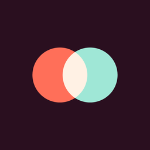

TwoGetherConditions d’utilisation
Dernière mise à jour : 14 novembre 2026
1. Le service
TwoGether est une application gratuite, éditée par Jordan Dupont, particulier (contact : bonjour@twogether-app.eu). Elle permet de créer des espaces privés à deux avec ses proches pour se laisser des cartes « Ouvre-moi quand… » et conserver les dates clés de son histoire commune.
2. Qui peut l’utiliser ?
Toute personne de 18 ans ou plus. Chaque personne utilise son propre compte et s’engage à garder son mot de passe confidentiel.
3. Vos contenus
Vous restez propriétaire de ce que vous écrivez. Vous êtes responsable de vos contenus et vous vous engagez à ne pas publier de contenu illégal, menaçant, harcelant ou portant atteinte aux droits d’autrui. TwoGether est un espace de bienveillance : tout usage visant à surveiller, contrôler ou blesser l’autre est contraire à l’esprit du service.
4. Les liens
Un lien réunit deux personnes (partenaire, ami·e, membre de la famille…). Vous pouvez avoir plusieurs liens. Chacun peut quitter un lien à tout moment : ce lien et tout son contenu (cartes et dates) sont alors supprimés définitivement, pour les deux personnes ; les autres liens ne sont pas touchés. Une carte peut être modifiée ou supprimée par son auteur tant qu’elle n’a pas été ouverte. Une seule carte peut être ouverte par jour.
5. Pas un service de santé
TwoGether est un outil d’attention et de lien. Il ne remplace en aucun cas un professionnel de santé, un psychologue ou un service d’urgence. En cas de détresse, appelez le 3114 (gratuit, 24h/24) ou le 15 / 112 en cas d’urgence.
6. Disponibilité
Nous faisons de notre mieux pour que TwoGether fonctionne sans interruption et que vos données soient protégées, sans pouvoir le garantir en toutes circonstances. Le service peut évoluer, être interrompu pour maintenance ou, en dernier recours, arrêté : dans ce cas, vous serez prévenu à l’avance et pourrez exporter vos données.
7. Suppression du compte
Vous pouvez supprimer votre compte à tout moment depuis l’application (Profil → Mes données). Nous pouvons suspendre un compte en cas d’usage manifestement contraire à ces conditions.
8. Données personnelles
Le traitement de vos données est décrit dans notre politique de confidentialité.
9. Droit applicable
Ces conditions sont soumises au droit français. En cas de litige, une solution amiable sera recherchée en priorité.